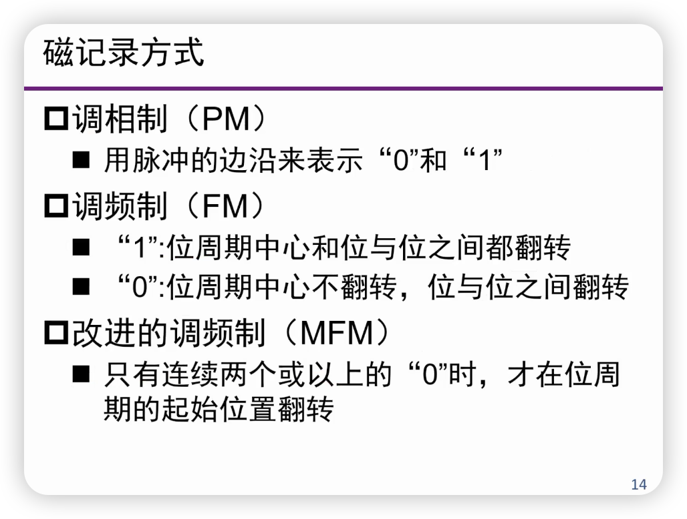
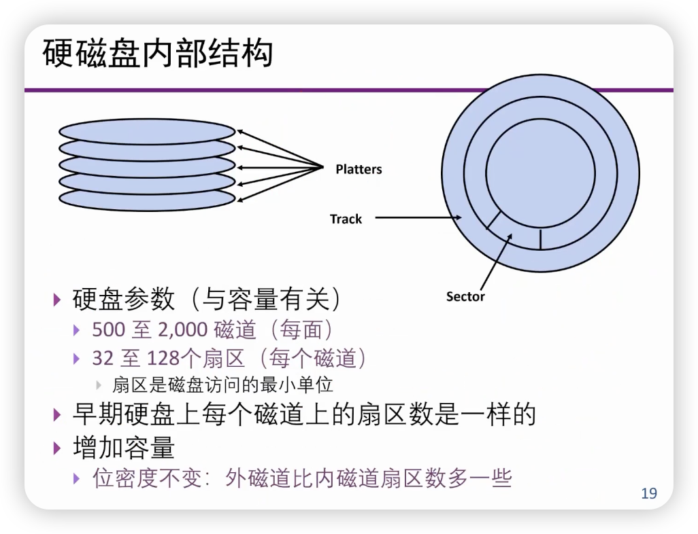

外存储器
非易失性存储¶
- 易失性存储：
- SRAM，Cache
- DRAM
- 特点：快速，掉电后信息丢失，访问粒度小（字节，缓存块）
- 非易失性存储器：
- 磁盘，磁带
- 光盘
- SSD，固态存储器
- 特点：慢速，掉电后信息不丢失，访问粒度大（以数据块为访问单位）
磁表面存储设备¶
- 磁颗粒的不同偏转方向来区分不同的状态
- 主存中存放CPU要立即访问的程序和数据
- 辅助存储器中存放CPU不立即使用的信息，在需要时在掉入主存中
随机访问和串行访问¶
- 随机访问
- 随机访问任何单元，访问时间与信息存放位置无关
- 每一位都有各自的读写设备
- 串行访问
- 顺序地一位一位地进行，访问时间与存储位的物理位置有关
- 共用一个读写设备
- Tape or Disk
主要技术指标¶
- 存储密度
- 位密度与道密度，密度=位密度\(\times\)道密度
- 单位长度（磁带）或单位面积（磁盘）所存储的二进制信息量
- 寻址时间，数据传输率，误码率，价格
磁记录原理¶
磁记录方式¶
- 磁记录方式
- 指一种编码方法，即如何将一串二进制信息，通过读写电路变换成磁层介质中的磁化翻转序列。
- 评价标准
- 编码效率
- 表示一个二进制位数据需要使用多少个磁颗粒？
- 自同步能力
- 读写时准确定位二进制数据位的能力
- 读写可靠性
- 编码效率

磁盘¶
- 目的
- 长期存储、断电后存储
- 容量大、价格低廉，但速度慢
- 可用在层次存储器的最底层
- 特点
- 使用旋转托盘上的表面磁颗粒来存储数据
- 可移动的读/写头来访问磁盘
- 硬盘、软盘比较
- 硬质托盘（金属铝），面积可以比较大；
- 由于可被精确控制，密度可以更高
- 旋转速度快，传输率高
- 可以多个盘片组合
- 盘片（platter）在磁头的作用下读取数据
- 这张图中，有5个盘片，10个盘面（surface）
- Tracks：磁道
latency = seek + rotate + transfer

- 柱面（Cylinder）
- 我们应该优先把数据放在同一个扇面上，还是放在同一个柱面上？
- 柱面，这样可以让磁头不动（减少seek）
- 旋转延迟
- 旋转速度：3600至7200 RPM
- 旋转时间：16ms至8ms每转
- 平均寻址时间8ms至4ms
- 这里为什么是一半？
- 访问速度（Transfer）
- 数据量（通常为一个扇区）：1 KB / sector
- 旋转速度如上
- 假如8ms每转，一转是32个sector，那么每个sector就是0.25ms
- 存储密度：磁道上单位长度存储的密度
- 磁盘直径：2.5至5.25in
- 一般为：2至12 MB每秒
我的理解是这样的，传输速度是指寻道和旋转结束以后，接下来所要耗费的时间。
注意：平均旋转延迟是旋转半圈的延迟。
会发现，读8KB和只读一个sector（512 bytes）的时间差距不大。
结论¶
- 额外开销在总开销中比例较大，所以一次传输大量数据比较有效
- 将页面存放在相邻扇区中可以避免额外的寻道开销（？）
- LYY说的比较清楚，放到同一个柱面解决的是seek的问题，相邻的sector解决的是rotate的问题
访问磁盘的过程¶
- 对磁盘的访问总是由缺页引起的：
- CPU给出地址，需要访问某存储单元；
- 并行进行TLB查找和Cache查找；
- TLB查找后申明没有找到；
- 停止并行查找，并通知操作系统处理；
- 操作系统检查页表，发现该页不在内存中，需要从硬盘调入
- 操作系统从主存中选择一页准备换出，为调入的页安排存放空间；
- 若被换出的页是“脏”页，需要将其写回磁盘存储；
- 操作系统申请I/O总线；
- 给磁盘发送写命令，磁盘接收数据；
- 根据要写入的地址，读/写头移动到正确的柱面，同时将数据接收到缓冲区；
- 寻道结束后，等到相应的扇区旋转到磁头下面，将数据写入扇区中；
- 在写入数据间隙，计算校验码并写入扇区中
- 下一步，操作系统继续申请总线，得到授权后，向磁盘发出读命令
- 磁盘识别地址，并转换为相应的地址段；
- 寻道，将读/写头移动到指定位置
- 从指定扇区中读取数据，进行校验
- 磁盘申请I/O总线
- 得到授权后，将数据通过总线送到内存
可靠性和可用性¶
- 这两个词是不同的
- 可靠性（reliability）：设备出现故障的几率
- 可用性（availability）：系统能正常运行的几率
- 出现故障不一定不能正常运行
- 比如说两个东西，有一个能用就是能用
- 可用性可以增加硬件冗余来提高：
- 例如：在存储器中增加校验码
- 可靠性通过下面途径提高：
- 改善使用环境
- 提高各部件的可靠性
- 减少组成部件
RAID（廉价磁盘的冗余阵列，Redundant Array of Independent Disks）¶
- 用N个低价磁盘构成一个统一管理的阵列，以取代特贵单一磁盘
- Patterson实验室提出
- 提高容错，提高速度
- 目标：
- N个磁盘的容量
- \(\frac{1}{N}\)的访问时间
- 更高的性价比
- 采用冗余技术提高存储信息的可用性
RAID0¶
- RAID0是没有容错性提升的
- 读较少个数据的时候，性能没有提升
RAID1¶
- 关注的不是性能，而是容错
- 我们把左边的四个盘记作盘0，右边四个盘记作盘1
- 每次写盘0的时候，也会写盘1
- 写性能不好，但读性能提高了两倍
- 可以从disk0读一部分，disk1读另一部分
RAID2¶
- 海明码
RAID3¶
RAID4¶
RAID5¶
- 为了减少校验盘的负载，将校验位循环均匀分布到所有的驱动器上。
RAID6¶
- 可以检验两个磁盘出错
固态盘（SSD）¶
- 固态盘没有机械结构，没有移动的部分
- 安静，低功耗，高性能，不怕摔，低发热
- 价格比硬盘高（将来会下降），有限的擦除技术
固态盘的存储单元¶
SLC，MLC，TLC，QLC¶
- 按照每个存储大院能够存储的位数分为SLC，MLC（2bits），TLC（3bits），QLC（4bits）
固态盘存储单元的擦出次数¶
- 有限次擦除
- 随着擦除次数的增加，存储单元不能可靠地保持状态（存储数据）
- 耐久性（擦了多少次以后，不能达到某个要求）
- 保持力（可以可靠地保存状态的时间）
- 随着擦除次数的增加，存储单元不能可靠地保持状态（存储数据）
- SLC：100000次
- MLC：10000次
- TLC：1000次
- FTL：Flash Translation Layer
- 逻辑地址到物理地址的转换
- 磨损均衡
- 垃圾回收

FTL¶
- FTL：逻辑地址到物理地址的翻译
- 除了做地址转换，FTL还帮助完成磨损均衡
- 写入之前必须要进行擦除，但是每一个块擦除的次数有限
- 写入的时候需要挑选位于擦除次数最少的块中的页面，完成磨损均衡
垃圾回收¶
- Greedy策略：选择无效页最多的Block
- 要移动原先的有效页
垃圾回收开销 = 擦除开销 + 页面移动开销
磨损均衡¶
- 尽量让不同闪存单元的磨损程度接近，以提高设备整体寿命
- 动态磨损均衡
- 在回收和分配时选择，从GC选中回收的块中选择用的次数比较少的闪存块继续用
- 静态磨损均衡
- 在回收和分配时选择，会定期将静态数据占用的数据块搬移再利用
作者: